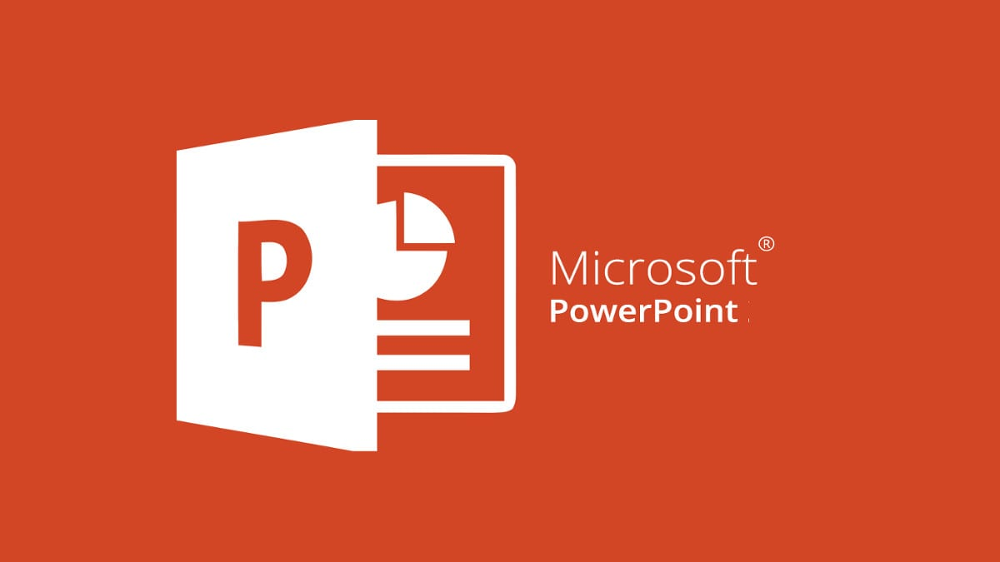

POWER POINT

A ferramenta disponibiliza recursos como edição de vídeos e novos efeitos de imagens e é bem fácil de utilizar. Os menus estão em uma barra superior, onde você pode configurar o tema da apresentação, o fundo dos slides, as transições e animações. Além de configurar a fonte e os diversos outros recursos disponibilizados pelo software. O programa conta ainda com opções de modos de exibição, compatibilidade com tela widescreen, reuniões online a partir da aplicação, variações de tema, alinhamento e espaçamento uniformes, compartilhamento, comentários, trabalho em conjunto e sensibilidade ao toque.
ATALHOS IMPORTANTES POWER POINT
Criar nova apresentação----Ctrl+N;
Adicionar um novo slide----Ctrl+M;
Aplicar formatação em negrito ao texto selecionado----Ctrl+B;
Abrir a caixa de diálogo Fonte----Ctrl+T;
Recortar o texto, objeto ou slide selecionado----Ctrl+X;
Copiar o texto, objeto ou slide selecionado----Ctrl+C;
Colar o texto, objeto ou slide recortado ou copiado----Ctrl+V;
Inserir um hiperlink----Ctrl+K;
Inserir um novo comentário----Ctrl+Alt+M;
Desfazer a última ação----Ctrl+Z;
Refazer a última ação----Ctrl+Y;
Ir para o próximo slide----Page down;
Ir para o slide anterior----Page up;
Iniciar a apresentação de slides----F5;
Encerrar a apresentação de slides----Esc;
Imprimir uma apresentação----Ctrl+P;
Salve a apresentação----Ctrl+S;
Feche o PowerPoint----Ctrl+Q;